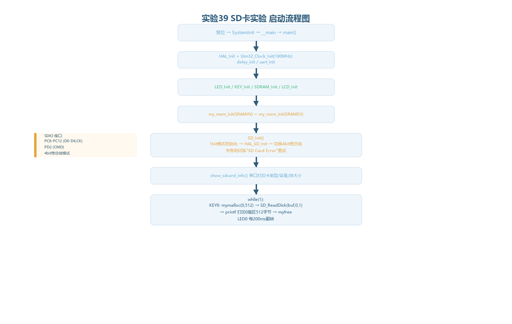
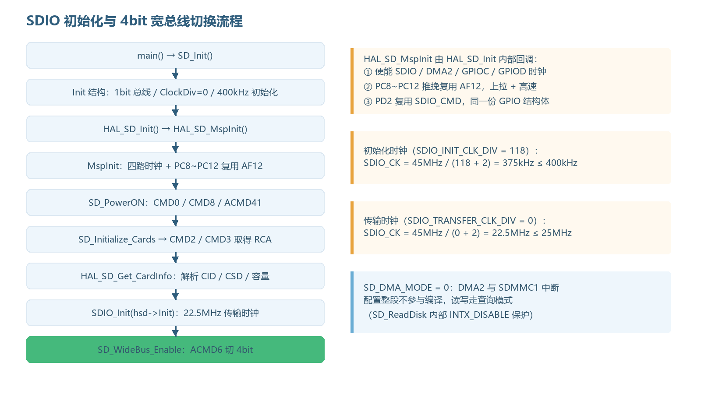
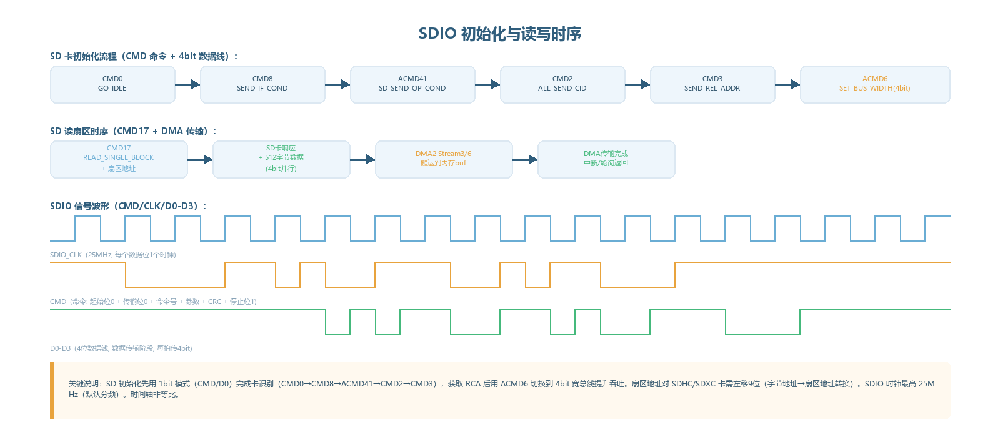
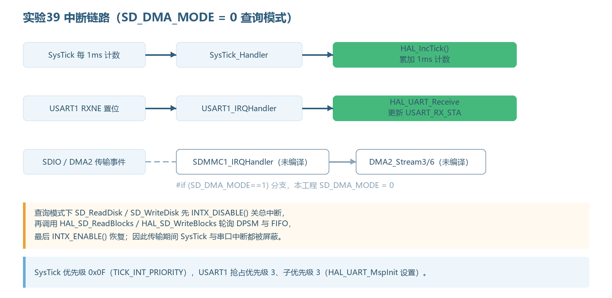

01 实验目标与硬件资源
本实验完成三件事：第一，用 SD_Init() 走完 SD 卡上电识别流程（CMD0 → CMD8 → ACMD41 → CMD2 → CMD3），并把总线从 1bit 切到 4bit；第二，读取卡的 CID/CSD，算出容量并在 LCD 与串口上显示；第三，在主循环中检测 KEY0，按下后读取第 0 扇区 512 字节，用 printf 以十六进制打印到 USART1。
| 对比项 | 实验38 内存管理 | 实验39 SD卡（本页） | 实验41 FATFS |
|---|---|---|---|
| 访问对象 | 片内 SRAM / 外部 SDRAM | SD 卡物理扇区 | SD 卡上的文件 |
| 核心接口 | mymalloc/myfree | SD_ReadDisk/SD_WriteDisk | f_open/f_read |
| 是否解析文件系统 | 否 | 否（直接操作扇区） | 是（挂载 FAT 卷） |
| 资源 | 引脚 / 编号 | 配置 | 用途 |
|---|---|---|---|
| SDIO_CK | PC12 | AF12、推挽复用、上拉、高速 | SD 卡时钟，22.5MHz |
| SDIO_CMD | PD2 | AF12、推挽复用、上拉、高速 | 命令与响应线 |
| SDIO_D0~D3 | PC8~PC11 | AF12、推挽复用、上拉、高速 | 4bit 数据线 |
| USART1_TX / RX | PA9 / PA10 | AF7、推挽复用、上拉 | 115200 打印扇区数据 |
| KEY0 | PH3 | 输入、上拉 | 触发读第 0 扇区 |
| DS0 | PB1（LED0） | 推挽输出、上拉 | 运行指示，200ms 翻转 |
SDIO_INIT_CLK_DIV = 118 得到 45MHz/(118+2)=375kHz；识别完成后才允许升到 25MHz 以内，因此“先慢后快”是必须的，不是可选项。02 目录与文件分工
| 文件 | 职责 | 本页关注点 |
|---|---|---|
USER/main.c | 应用入口：外设初始化、SD 卡检测、按键读扇区 | 初始化顺序、while(SD_Init()) 重试、主循环 |
USER/stm32f4xx_it.c | 异常与 SysTick 中断服务 | SysTick_Handler 只调用 HAL_IncTick() |
USER/system_stm32f4xx.c | SystemInit、SystemCoreClock | FPU 开启、RCC 复位、SCB->VTOR |
CORE/startup_stm32f429xx.s | 向量表、栈堆、Reset_Handler | 栈 0x400 / 堆 0x200、弱符号 |
SYSTEM/sys/sys.c | 时钟配置与中断开关汇编 | Stm32_Clock_Init、INTX_DISABLE |
SYSTEM/delay/delay.c | 基于 SysTick 的 us/ms 延时 | fac_us 与递减计数器换算 |
SYSTEM/usart/usart.c | USART1 初始化、fputc 重定向 | PA9/PA10 复用、printf 输出通道 |
HARDWARE/SDIO/sdio_sdcard.c | SD 卡驱动：初始化、读写、DMA 分支 | SD_Init、SD_ReadDisk、扇区地址左移 |
HARDWARE/SDRAM/sdram.c | 外部 SDRAM 初始化 | 为外部内存池提供物理存储 |
HARDWARE/LCD/lcd.c | LCD 字符/数字显示 | LCD_ShowString、LCD_ShowNum |
HARDWARE/LED/led.c、KEY/key.c | LED 与按键 | PB1 输出、PH3 上拉输入与扫描 |
MALLOC/malloc.c | 内存池管理 | mymalloc(0,512) 从内部池取缓冲 |
HALLIB/.../stm32f4xx_hal_sd.c | SDIO 协议栈 | 命令序列、CSD 解析、查询读写 |
注意 sdio_sdcard.c 里有一行关键的编译开关：SD_DMA_MODE 0（在 sdio_sdcard.h 中定义）。它决定了本工程走查询（轮询）分支，DMA2 与 SDMMC1 中断配置整段被 #if 排除，后面的中断链路一节会专门说明。
03 启动流程总览

顺序不能随意调换：HAL_Init() 必须在最前，因为它建立 1ms 时基与 NVIC 分组，后面的 delay_ms 与中断优先级都依赖它；Stm32_Clock_Init() 决定 HCLK=180MHz，SDIO 的 45MHz 分频时钟也由它派生；SDRAM_Init() 与 my_mem_init(SRAMEX) 则为外部内存池准备物理空间。
main() 全文
int main(void)
{
u8 key;
u32 sd_size;
u8 t=0;
u8 *buf;
HAL_Init(); // Flash 缓存 + 优先级分组 2 + 1ms 时基
Stm32_Clock_Init(360,25,2,8); // Fvco=360MHz，SYSCLK=180MHz
delay_init(180); // fac_us=180，SysTick 时钟源切到 HCLK
uart_init(115200); // USART1：PA9/PA10，115200-8-N-1
LED_Init(); // PB0/PB1 推挽输出，默认置高（灯灭）
KEY_Init(); // PA0 下拉，PC13/PH2/PH3 上拉
SDRAM_Init(); // 外部 SDRAM，供内存池与显存使用
LCD_Init(); // LTDC 屏初始化
my_mem_init(SRAMIN); // 内部 SRAM 内存池（最多 160KB）
my_mem_init(SRAMEX); // 外部 SDRAM 内存池（最多 28912KB）
POINT_COLOR=RED; // 之后 LCD 文字为红色
LCD_ShowString(30,50,200,16,16,"Aopllo STM32F4/F7");
LCD_ShowString(30,70,200,16,16,"SD CARD TEST");
LCD_ShowString(30,90,200,16,16,"ATOM@ALIENTEK");
LCD_ShowString(30,110,200,16,16,"2016/1/16");
LCD_ShowString(30,130,200,16,16,"KEY0:Read Sector 0");
while(SD_Init()) // 返回非 0 表示没检测到卡，一直重试
{
LCD_ShowString(30,150,200,16,16,"SD Card Error!");
delay_ms(500);
LCD_ShowString(30,150,200,16,16,"Please Check! ");
delay_ms(500);
LED0=!LED0; // DS0 每秒闪烁，提示未识别
}
show_sdcard_info(); // 串口打印卡类型、制造商、RCA、容量、块大小
POINT_COLOR=BLUE; // 识别成功后文字转蓝
LCD_ShowString(30,150,200,16,16,"SD Card OK ");
LCD_ShowString(30,170,200,16,16,"SD Card Size: MB");
LCD_ShowNum(30+13*8,170,SDCardInfo.CardCapacity>>20,5,16); // 字节右移 20 位 = MB
while(1)
{
key=KEY_Scan(0); // mode=0：不支持连按
if(key==KEY0_PRES) // 只有 KEY0 有对应动作
{
buf=mymalloc(0,512); // 0=SRAMIN，申请 512 字节
if(SD_ReadDisk(buf,0,1)==0) // 读第 0 扇区 1 个块
{
LCD_ShowString(30,190,200,16,16,"USART1 Sending Data...");
printf("SECTOR 0 DATA:\r\n");
for(sd_size=0;sd_size<512;sd_size++)printf("%x ",buf[sd_size]);
printf("\r\nDATA ENDED\r\n");
LCD_ShowString(30,190,200,16,16,"USART1 Send Data Over!");
}
myfree(0,buf); // 归还内部内存池
}
t++;
delay_ms(10); // 10ms × 20 = 200ms
if(t==20)
{
LED0=!LED0; // 正常运行心跳
t=0;
}
}
}
- 为什么
while(SD_Init())要写成循环：SD_Init()返回 0 才算成功，返回 1（HAL_SD_Init 失败）或 2（切 4bit 失败）都会重新来过；卡没插好时程序停在这里闪烁 DS0，而不是带着错误继续跑。 - 参数与返回值：
SD_Init(void)无入参，返回u8：0 成功、1HAL_SD_Init失败、2 宽总线配置失败。 show_sdcard_info()的位置：只能在SD_Init()成功之后调用，因为它读的是全局SDCardInfo，该结构体由HAL_SD_Get_CardInfo在初始化过程中填充。- 容量的单位换算：
CardCapacity单位是字节，右移 20 位即除以 1024×1024，得到 MB，所以 LCD 上一行预留的 “MB” 与数字是拼在一起的。 - 缓冲为什么从内部池申请：
mymalloc(0,512)的 0 是SRAMIN，内部 SRAM 访问速度快且无需额外初始化；外部池虽大，但访问要经过 FMC，读 512 字节没必要绕远路。
04 启动文件与向量表
启动文件用汇编定义了栈区、堆区、向量表和复位入口。向量表第 0 项是栈顶地址，第 1 项是 Reset_Handler；Cortex-M4 复位时硬件自动从地址 0x00000000 取这两项，所以向量表必须落在 Flash 起始处（本工程 VECT_TAB_OFFSET = 0x00）。
Stack_Size EQU 0x400; // 栈 1KB，主栈 MSP 从这里向下生长 AREA STACK, NOINIT, READWRITE, ALIGN=3 Stack_Mem SPACE Stack_Size __initial_sp Heap_Size EQU 0x200; // 堆 512B，malloc 用；本工程主要用自己的内存池 AREA HEAP, NOINIT, READWRITE, ALIGN=3 __heap_base Heap_Mem SPACE Heap_Size __heap_limit PRESERVE8 THUMB AREA RESET, DATA, READONLY EXPORT __Vectors __Vectors DCD __initial_sp // 第 0 项：栈顶 DCD Reset_Handler // 第 1 项：复位入口 DCD NMI_Handler // 以下为异常/中断入口 DCD HardFault_Handler DCD MemManage_Handler DCD BusFault_Handler DCD UsageFault_Handler DCD 0 // 保留 DCD 0 DCD 0 DCD 0 DCD SVC_Handler DCD DebugMon_Handler DCD 0 DCD PendSV_Handler DCD SysTick_Handler // 1ms 时基中断入口 Reset_Handler PROC EXPORT Reset_Handler [WEAK] IMPORT SystemInit IMPORT __main LDR R0, =SystemInit // 先跑 C 库之外的时钟/FPU 初始化 BLX R0 LDR R0, =__main // 再进 C 库启动代码，最终调用 main() BX R0 ENDP
- 为什么先 SystemInit 再 __main：
SystemInit负责 FPU、RCC 复位与向量表偏移，属于“芯片级”初始化；__main是编译器运行库入口，负责把.data从 Flash 拷到 RAM、把.bss清零，然后才跳到main()。顺序反了，全局变量初值就不可靠。 - 栈 0x400 够不够：1KB 主栈要容纳 main 的局部变量、函数调用链和中断嵌套现场。本实验调用层级浅、局部变量只有几个指针，1KB 足够；若加深递归或加大局部数组，需要自行调大。
- 堆 0x200 与实际内存池无关：512B 堆是给标准库
malloc用的；工程里mymalloc管理的是MEM1_BLOCK_SIZE划分的独立内存池，两者互不干涉。 - 弱符号 [WEAK] 的意义：启动文件把每个中断都导出为弱符号并写成死循环，用户在
stm32f4xx_it.c或外设驱动里定义同名函数即可覆盖。例如SysTick_Handler就被stm32f4xx_it.c覆盖成HAL_IncTick()。 - 向量表偏移：
SystemInit末尾执行SCB->VTOR = FLASH_BASE | 0x00，把向量表基址明确指向 0x08000000。做 IAP 或 Bootloader 时只需改VECT_TAB_OFFSET，不用重排启动文件。
05 SystemInit 与 HAL_Init
void SystemInit(void)
{
#if (__FPU_PRESENT == 1) && (__FPU_USED == 1)
SCB->CPACR |= ((3UL << 10*2)|(3UL << 11*2)); // CP10/CP11 全权限，开启 FPU
#endif
RCC->CR |= (uint32_t)0x00000001; // 打开 HSI
RCC->CFGR = 0x00000000; // 时钟源回到 HSI
RCC->CR &= (uint32_t)0xFEF6FFFF; // 关 HSEON/CSSON/PLLON
RCC->PLLCFGR = 0x24003010; // PLL 配置复位默认值
RCC->CR &= (uint32_t)0xFFFBFFFF; // 清 HSEBYP
RCC->CIR = 0x00000000; // 关闭所有 RCC 中断
#ifdef VECT_TAB_SRAM
SCB->VTOR = SRAM_BASE | VECT_TAB_OFFSET;
#else
SCB->VTOR = FLASH_BASE | VECT_TAB_OFFSET; // 向量表放内部 Flash
#endif
}
HAL_StatusTypeDef HAL_Init(void)
{
#if (INSTRUCTION_CACHE_ENABLE != 0)
__HAL_FLASH_INSTRUCTION_CACHE_ENABLE(); // 指令缓存
#endif
#if (DATA_CACHE_ENABLE != 0)
__HAL_FLASH_DATA_CACHE_ENABLE(); // 数据缓存
#endif
#if (PREFETCH_ENABLE != 0)
__HAL_FLASH_PREFETCH_BUFFER_ENABLE(); // 预取缓冲
#endif
HAL_NVIC_SetPriorityGrouping(NVIC_PRIORITYGROUP_2); // 2 位抢占 + 2 位子优先级
HAL_InitTick(TICK_INT_PRIORITY); // TICK_INT_PRIORITY = 0x0F，1ms 节拍
HAL_MspInit(); // 全局底层初始化（本工程为空实现）
return HAL_OK;
}
- SystemInit 没有参数也没有返回值：它由启动文件用
BLX调用，不能依赖任何 C 运行时环境，所以里面全是直接写寄存器。 - FPU 为什么必须在这里开：Cortex-M4 的 CPACR 默认禁止访问协处理器 CP10/CP11，不开的话任何浮点指令都会进 UsageFault。本实验虽以整数为主，但
printf("%x")与后续浮点实验共用同一套启动流程。 - HAL_InitTick 的参数：
TICK_INT_PRIORITY在stm32f4xx_hal_conf.h定义为0x0F，进入HAL_InitTick后作为SysTick_IRQn的抢占优先级。 - 为什么 HAL_Init 必须在 main 第一行：
HAL_Delay、HAL_GetTick、以及所有 HAL 的超时判断都依赖 SysTick 计数；若先调用外设初始化里的 HAL 函数，超时逻辑会读到未启动的时基。 - 优先级分组 2 的后果：4 位优先级被切成 2 位抢占 + 2 位子优先级。所以后面
HAL_NVIC_SetPriority(USART1_IRQn,3,3)里的 3/3 都是合法值（0~3），而 SDMMC1 的 2/0 也在此范围内。
06 时钟树与 SysTick 时基
| 节点 | 算式 | 结果 | 去向 |
|---|---|---|---|
| PLL 输入 Fs | HSE 晶振 | 25MHz | PLLM=25 分频后 1MHz |
| VCO 频率 Fvco | Fs × (PLLN / PLLM) = 25 × (360 / 25) | 360MHz | PLLP / PLLQ 的输入 |
| SYSCLK | Fvco / PLLP = 360 / 2 | 180MHz | 系统主时钟 |
| HCLK | SYSCLK / AHB 分频 1 | 180MHz | CPU、DMA、SysTick 时钟源 |
| PCLK1 | HCLK / 4 | 45MHz | APB1 外设 |
| PCLK2 | HCLK / 2 | 90MHz | APB2 外设 |
| PLL48CK（USB/SDIO） | Fvco / PLLQ = 360 / 8 | 45MHz | SDIO 分频源 |
| SDIO_CK（初始化） | 45MHz / (118 + 2) | 375kHz | ≤400kHz 满足规范 |
| SDIO_CK（传输） | 45MHz / (0 + 2) | 22.5MHz | ≤25MHz 满足规范 |
Stm32_Clock_Init 配置过程
void Stm32_Clock_Init(u32 plln,u32 pllm,u32 pllp,u32 pllq)
{
HAL_StatusTypeDef ret = HAL_OK;
RCC_OscInitTypeDef RCC_OscInitStructure;
RCC_ClkInitTypeDef RCC_ClkInitStructure;
__HAL_RCC_PWR_CLK_ENABLE(); // 调压器与 OverDrive 都在 PWR 里
__HAL_PWR_VOLTAGESCALING_CONFIG(PWR_REGULATOR_VOLTAGE_SCALE1); // 电压等级 1，才允许 180MHz
RCC_OscInitStructure.OscillatorType=RCC_OSCILLATORTYPE_HSE;
RCC_OscInitStructure.HSEState=RCC_HSE_ON; // 外部 25MHz 晶振
RCC_OscInitStructure.PLL.PLLState=RCC_PLL_ON;
RCC_OscInitStructure.PLL.PLLSource=RCC_PLLSOURCE_HSE;
RCC_OscInitStructure.PLL.PLLM=pllm; // 25
RCC_OscInitStructure.PLL.PLLN=plln; // 360
RCC_OscInitStructure.PLL.PLLP=pllp; // 2
RCC_OscInitStructure.PLL.PLLQ=pllq; // 8 → 45MHz 给 SDIO/USB
ret=HAL_RCC_OscConfig(&RCC_OscInitStructure);
if(ret!=HAL_OK) while(1);
ret=HAL_PWREx_EnableOverDrive(); // F429 跑到 180MHz 必须开 OverDrive
if(ret!=HAL_OK) while(1);
RCC_ClkInitStructure.ClockType=(RCC_CLOCKTYPE_SYSCLK|RCC_CLOCKTYPE_HCLK|RCC_CLOCKTYPE_PCLK1|RCC_CLOCKTYPE_PCLK2);
RCC_ClkInitStructure.SYSCLKSource=RCC_SYSCLKSOURCE_PLLCLK;
RCC_ClkInitStructure.AHBCLKDivider=RCC_SYSCLK_DIV1;
RCC_ClkInitStructure.APB1CLKDivider=RCC_HCLK_DIV4; // 45MHz，APB1 上限
RCC_ClkInitStructure.APB2CLKDivider=RCC_HCLK_DIV2; // 90MHz
ret=HAL_RCC_ClockConfig(&RCC_ClkInitStructure,FLASH_LATENCY_5); // 5 个等待周期
if(ret!=HAL_OK) while(1);
}
- 参数含义：四个入参对应 PLL 的 N/M/P/Q。
plln是倍频（64~432），pllm是 PLL 前分频（2~63），pllp只能是 2/4/6/8，pllq取 2~15。 - 返回值：函数声明为
void，没有返回值；每一步失败都以while(1)停住，用调试器看 PC 停在哪一行即可定位是晶振、OverDrive 还是总线分频出错。 - FLASH_LATENCY_5 的来历：180MHz 下 5 个等待周期（6 个 CPU 周期）才能完成一次 Flash 读取，少设会取指错误，多设会白白降低性能。
- OverDrive 的必要性：F42x/F43x 在 180MHz 时需先使能 OverDrive 才能稳定工作，这也是必须先打开 PWR 时钟的原因。
- 45MHz 从哪里来：PLLQ=8，Fvco/PLLQ = 360/8 = 45MHz，它同时供给 USB OTG、SDIO 与 RNG，所以 SDIO 的时钟上限要按 45MHz 计算，而不是 90MHz 的 PCLK2。
delay_init 与 delay_us
static u32 fac_us=0; // 每微秒的 SysTick 计数个数 void delay_init(u8 SYSCLK) { HAL_SYSTICK_CLKSourceConfig(SYSTICK_CLKSOURCE_HCLK); // SysTick 时钟源 = HCLK fac_us=SYSCLK; // 180MHz → 1us 计 180 个数 } void delay_us(u32 nus) { u32 ticks; u32 told,tnow,tcnt=0; u32 reload=SysTick->LOAD; // 记录重装值，用于回绕计算 ticks=nus*fac_us; // 需要等待的节拍数 told=SysTick->VAL; // 进入时的计数值 while(1) { tnow=SysTick->VAL; if(tnow!=told) { if(tnow<told)tcnt+=told-tnow; // 递减计数，正常区间 else tcnt+=reload-tnow+told; // 发生回绕 told=tnow; if(tcnt>=ticks)break; } }; } void delay_ms(u16 nms) { u32 i; for(i=0;i<nms;i++) delay_us(1000); // 非 OS 版本：逐毫秒累加 }
- 参数与返回值：
delay_init(u8 SYSCLK)传入主频 MHz 值（本工程 180），无返回值；delay_us(u32 nus)为微秒数，delay_ms(u16 nms)为毫秒数，均无返回值。 - 为什么用 VAL 而不是中断计数：直接读
SysTick->VAL递减值可以做到微秒级精度，且不占中断；缺点是不精确、受中断影响，只能用于普通延时，不能当时钟源。 - 回绕处理：当
tnow > told说明计数器已从 0 回绕到 LOAD，增量应为reload - tnow + told，漏掉这一支会让延时突然变长。 - 本工程
SYSTEM_SUPPORT_OS为 0：走的是文件末尾那段不带OSSchedLock的普通版本，因此delay_ms就是循环调用delay_us(1000)。
07 SDIO 初始化

HAL_SD_MspInit() 是 HAL 的回调，由 HAL_SD_Init() 内部调用，负责 MCU 侧的“脏活”：开时钟、配 GPIO、配 DMA、配中断。注意 PD2 也复用了同一份结构体，所以它的 Alternate 仍是 GPIO_AF12_SDIO。
void HAL_SD_MspInit(SD_HandleTypeDef *hsd)
{
DMA_HandleTypeDef TxDMAHandler,RxDMAHandler;
GPIO_InitTypeDef GPIO_Initure;
__HAL_RCC_SDIO_CLK_ENABLE(); // SDIO 外设时钟
__HAL_RCC_DMA2_CLK_ENABLE(); // DMA2 时钟（查询模式下实际不用）
__HAL_RCC_GPIOC_CLK_ENABLE();
__HAL_RCC_GPIOD_CLK_ENABLE();
//PC8,9,10,11,12
GPIO_Initure.Pin=GPIO_PIN_8|GPIO_PIN_9|GPIO_PIN_10|GPIO_PIN_11|GPIO_PIN_12;
GPIO_Initure.Mode=GPIO_MODE_AF_PP; // 推挽复用
GPIO_Initure.Pull=GPIO_PULLUP; // 上拉，SD 总线空闲为高
GPIO_Initure.Speed=GPIO_SPEED_HIGH; // 高速档，22.5MHz 下必须
GPIO_Initure.Alternate=GPIO_AF12_SDIO; // 复用功能 12
HAL_GPIO_Init(GPIOC,&GPIO_Initure);
//PD2
GPIO_Initure.Pin=GPIO_PIN_2; // 沿用上面的 AF/上拉/高速配置
HAL_GPIO_Init(GPIOD,&GPIO_Initure);
#if (SD_DMA_MODE==1) // 本工程 SD_DMA_MODE=0，以下不编译
HAL_NVIC_SetPriority(SDMMC1_IRQn,2,0);
HAL_NVIC_EnableIRQ(SDMMC1_IRQn);
SDRxDMAHandler.Instance=DMA2_Stream3;
SDRxDMAHandler.Init.Channel=DMA_CHANNEL_4;
SDRxDMAHandler.Init.Direction=DMA_PERIPH_TO_MEMORY;
SDRxDMAHandler.Init.PeriphInc=DMA_PINC_DISABLE;
SDRxDMAHandler.Init.MemInc=DMA_MINC_ENABLE;
SDRxDMAHandler.Init.PeriphDataAlignment=DMA_PDATAALIGN_WORD;
SDRxDMAHandler.Init.MemDataAlignment=DMA_MDATAALIGN_WORD;
SDRxDMAHandler.Init.Mode=DMA_PFCTRL;
SDRxDMAHandler.Init.Priority=DMA_PRIORITY_VERY_HIGH;
SDRxDMAHandler.Init.FIFOMode=DMA_FIFOMODE_ENABLE;
SDRxDMAHandler.Init.FIFOThreshold=DMA_FIFO_THRESHOLD_FULL;
SDRxDMAHandler.Init.MemBurst=DMA_MBURST_INC4;
SDRxDMAHandler.Init.PeriphBurst=DMA_PBURST_INC4;
__HAL_LINKDMA(hsd, hdmarx, SDRxDMAHandler); // 句柄与 DMA 互挂
HAL_DMA_DeInit(&SDRxDMAHandler);
HAL_DMA_Init(&SDRxDMAHandler);
SDTxDMAHandler.Instance=DMA2_Stream6;
SDTxDMAHandler.Init.Channel=DMA_CHANNEL_4;
SDTxDMAHandler.Init.Direction=DMA_MEMORY_TO_PERIPH;
// …其余字段与接收 DMA 相同，省略…
__HAL_LINKDMA(hsd, hdmatx, SDTxDMAHandler);
HAL_DMA_DeInit(&SDTxDMAHandler);
HAL_DMA_Init(&SDTxDMAHandler);
HAL_NVIC_SetPriority(DMA2_Stream3_IRQn, 3, 0);
HAL_NVIC_EnableIRQ(DMA2_Stream3_IRQn);
HAL_NVIC_SetPriority(DMA2_Stream6_IRQn, 3, 0);
HAL_NVIC_EnableIRQ(DMA2_Stream6_IRQn);
#endif
}
- 作用与调用时机：这是
__weak回调的用户实现，HAL_SD_Init()第一件事就是调用它，因此不需要在 main 里手动调用。 - 参数与返回值：入参
hsd是 SD 句柄指针，用来在 DMA 模式下把 DMA 句柄挂到hdmarx/hdmatx；函数无返回值。 - 为什么上拉必须开：SD 总线是开漏语义的反相逻辑，空闲时 CMD/DAT 必须被拉高；F429 内部上拉约 40kΩ，配合卡侧与板级电阻才能稳定识别。
- 为什么
HAL_DMA_DeInit在Init之前：先把 Stream 恢复到复位值，避免上一次残留配置（尤其 FIFO 与 burst）影响本次传输。 - DMA 优先级为何高于 SDIO：库注释要求 DMA 中断优先级数值小于 SDIO，才能及时搬走 FIFO 数据防止溢出；本工程未用 DMA，这条只在改成 DMA 模式时才生效。
SD_Init：先 1bit/慢时钟识别，再切 4bit
u8 SD_Init(void)
{
u8 SD_Error;
//初始化时的时钟不能大于400KHZ
SDCARD_Handler.Instance=SDIO;
SDCARD_Handler.Init.ClockEdge=SDIO_CLOCK_EDGE_RISING; // 上升沿采样
SDCARD_Handler.Init.ClockBypass=SDIO_CLOCK_BYPASS_DISABLE; // 不用 bypass，走分频
SDCARD_Handler.Init.ClockPowerSave=SDIO_CLOCK_POWER_SAVE_DISABLE; // 空闲不关时钟
SDCARD_Handler.Init.BusWide=SDIO_BUS_WIDE_1B; // 识别阶段只能 1bit
SDCARD_Handler.Init.HardwareFlowControl=SDIO_HARDWARE_FLOW_CONTROL_DISABLE;
SDCARD_Handler.Init.ClockDiv=SDIO_TRANSFER_CLK_DIV; // 0 → 45/(0+2)=22.5MHz
SD_Error=HAL_SD_Init(&SDCARD_Handler,&SDCardInfo);
if(SD_Error!=SD_OK) return 1; // 识别失败
SD_Error=HAL_SD_WideBusOperation_Config(&SDCARD_Handler,SDIO_BUS_WIDE_4B);
if(SD_Error!=SD_OK) return 2; // 切 4bit 失败
return 0;
}
- 作用：把用户关心的 6 个字段填进句柄，调用 HAL 完成上电识别，再把总线切到 4bit。
- 参数与返回值：无入参；返回
u8，0 成功、1HAL_SD_Init失败、2 宽总线失败。main 正是用这个返回值做重试条件。 - ClockDiv 为什么填 0：HAL 内部会先用
SDIO_INIT_CLK_DIV=118以 375kHz 完成识别，结束时再执行SDIO_Init(hsd->Instance, hsd->Init)，此时才用这里的 0 得到 22.5MHz。写 0 是“传输阶段”的分频值，不是识别阶段。 - 为什么必须单独调用 WideBus：4bit 模式要靠 ACMD6 通知卡端，HAL_SD_Init 只负责让卡进入 Ready 状态，不会自动切总线宽度。
08 SD 卡读写时序与数据流

读一个扇区的完整动作是：CMD16 设置块长 512 字节 → CMD17 带扇区地址 → 卡在 D0~D3 上返回数据块 + CRC → SDIO 的 DPSM 把数据推进 FIFO → CPU（或 DMA）取走。写则用 CMD24，方向相反。
u8 SD_ReadDisk(u8* buf,u32 sector,u32 cnt)
{
u8 sta=SD_OK;
long long lsector=sector;
u8 n;
lsector<<=9; // 扇区号 ×512 → 字节地址
INTX_DISABLE(); // 查询模式：严禁中断打断 SDIO 读写
if((u32)buf%4!=0) // 缓冲区不是 4 字节对齐
{
for(n=0;n<cnt;n++)
{
sta=HAL_SD_ReadBlocks(&SDCARD_Handler,(uint32_t*)SDIO_DATA_BUFFER,lsector+512*n,512,1);
memcpy(buf,SDIO_DATA_BUFFER,512); // 从对齐缓冲搬一次
buf+=512;
}
}else
{
sta=HAL_SD_ReadBlocks(&SDCARD_Handler,(uint32_t*)buf,lsector,512,cnt); // 直接读入用户缓冲
}
INTX_ENABLE(); // 恢复总中断
return sta;
}
- 作用：把“扇区号 + 扇区数”转成 HAL 需要的字节地址与块数，并处理缓冲区对齐问题。
- 参数：
buf目标缓冲区；sector起始扇区号；cnt连续扇区数。返回 0 表示成功，其他值为 HAL 错误码。 - 为什么左移 9 位：SDIO 的
ReadAddr参数按字节寻址，1 个扇区 512 字节 = 2^9，所以扇区号乘以 512。注意这里对 V1.1 卡也直接左移，是因为该分支外层的条件在 DMA 版本里才区分卡类型，本工程查询版本统一按字节地址处理。 - 对齐检查的意义：SDIO FIFO 按 32 位搬运，若用户缓冲区不是 4 字节对齐，DMA/查询读写可能触发对齐异常或数据错位，因此用
SDIO_DATA_BUFFER（__align(4)）中转。 - 为什么关总中断：查询模式在
HAL_SD_ReadBlocks内靠循环等 FIFO 标志，一旦被 SysTick 或串口中断拉长，FIFO 可能溢出，所以整段传输必须原子化。
HAL_SD_ReadBlocks 内部：命令与 DPSM
HAL_SD_ErrorTypedef HAL_SD_ReadBlocks(SD_HandleTypeDef *hsd, uint32_t *pReadBuffer,
uint64_t ReadAddr, uint32_t BlockSize, uint32_t NumberOfBlocks)
{
SDIO_CmdInitTypeDef sdio_cmdinitstructure;
SDIO_DataInitTypeDef sdio_datainitstructure;
HAL_SD_ErrorTypedef errorstate = SD_OK;
uint32_t count = 0, *tempbuff = (uint32_t *)pReadBuffer;
hsd->Instance->DCTRL = 0; // 先清数据控制寄存器
if (hsd->CardType == HIGH_CAPACITY_SD_CARD)
{
BlockSize = 512; // SDHC/SDXC 块长固定 512
ReadAddr /= 512; // 高容量卡用扇区地址，不是字节地址
}
sdio_cmdinitstructure.Argument = (uint32_t) BlockSize;
sdio_cmdinitstructure.CmdIndex = SD_CMD_SET_BLOCKLEN; // CMD16
sdio_cmdinitstructure.Response = SDIO_RESPONSE_SHORT;
sdio_cmdinitstructure.WaitForInterrupt = SDIO_WAIT_NO;
sdio_cmdinitstructure.CPSM = SDIO_CPSM_ENABLE;
SDIO_SendCommand(hsd->Instance, &sdio_cmdinitstructure);
errorstate = SD_CmdResp1Error(hsd, SD_CMD_SET_BLOCKLEN);
sdio_datainitstructure.DataTimeOut = SD_DATATIMEOUT; // 0xFFFFFFFF
sdio_datainitstructure.DataLength = NumberOfBlocks * BlockSize;
sdio_datainitstructure.DataBlockSize = DATA_BLOCK_SIZE; // 2^9 = 512
sdio_datainitstructure.TransferDir = SDIO_TRANSFER_DIR_TO_SDIO; // 卡 → MCU
sdio_datainitstructure.TransferMode = SDIO_TRANSFER_MODE_BLOCK;
sdio_datainitstructure.DPSM = SDIO_DPSM_ENABLE;
SDIO_DataConfig(hsd->Instance, &sdio_datainitstructure);
if(NumberOfBlocks > 1)
sdio_cmdinitstructure.CmdIndex = SD_CMD_READ_MULT_BLOCK; // CMD18
else
sdio_cmdinitstructure.CmdIndex = SD_CMD_READ_SINGLE_BLOCK; // CMD17
// …发送命令并轮询 FIFO，把数据搬入 tempbuff，源码略…
return errorstate;
}
- 作用：完成“设块长 + 发读命令 + 配置数据通路 + 搬数据”四步，是查询模式的底层实现。
- 参数与返回值：
hsd句柄、pReadBuffer目标缓冲、ReadAddr地址、BlockSize块长、NumberOfBlocks块数；返回HAL_SD_ErrorTypedef，SD_OK为成功。 - 同一份地址两套语义：高容量卡用“扇区号”，标准容量卡用“字节地址”。所以
SD_ReadDisk先左移 9 位；若卡是 SDHC，HAL 内部又除以 512 还原成扇区号，最终下发给卡的值仍正确。 - DPSM 的三要素：数据长度、块大小、传输方向。方向填错（TO_CARD / TO_SDIO）会读到全 0 或直接超时。
- 单块与多块：只剩 1 个块用 CMD17，多块用 CMD18，多块结束后还需 CMD12 停止传输（库内部处理）。
写方向由 SD_WriteDisk() 完成，结构与读完全对称：同样左移 9 位、同样做对齐检查，只是改调 HAL_SD_WriteBlocks()，方向为 SDIO_TRANSFER_DIR_TO_CARD。工程里的 sd_test_write() 只用于测试，源码注释也提醒“慎用，最好写全 0xFF 的扇区，否则可能损坏 SD 卡”。
09 中断链路

| 触发源 | 控制器 / 寄存器 | NVIC 中断号与优先级 | ISR | 用户回调 / 动作 |
|---|---|---|---|---|
| SysTick 计数到 0 | SysTick LOAD/VAL，HCLK 驱动 | SysTick_IRQn，抢占 0x0F | SysTick_Handler | HAL_IncTick() 累加毫秒 |
| USART1 收到 1 字节 | USART1->SR 的 RXNE | USART1_IRQn，抢占 3 / 子 3 | USART1_IRQHandler | HAL_UART_Receive 取字节，更新 USART_RX_STA |
| SDIO 数据传输完成 | SDIO STA 的 DATAEND 等 | SDMMC1_IRQn，抢占 2 | SDMMC1_IRQHandler | 仅 SD_DMA_MODE==1 时编译，本工程未启用 |
| DMA2 传输完成 | DMA2 LISR/HISR | DMA2_Stream3/6_IRQn，抢占 3 | DMA2_Stream3/6_IRQHandler | 同上，本工程未启用 |
// stm32f4xx_it.c：1ms 时基
void SysTick_Handler(void)
{
HAL_IncTick(); // uwTick++，HAL_Delay/HAL_GetTick 的数据源
}
// usart.c：串口接收（EN_USART1_RX = 1）
void USART1_IRQHandler(void)
{
u8 Res;
if((__HAL_UART_GET_FLAG(&UART1_Handler,UART_FLAG_RXNE)!=RESET))
{
HAL_UART_Receive(&UART1_Handler,&Res,1,1000); // 取 1 字节，超时 1000ms
if((USART_RX_STA&0x8000)==0) // bit15：接收完成标志
{
if(USART_RX_STA&0x4000) // bit14：已收到 0x0D
{
if(Res!=0x0a)USART_RX_STA=0; // 不是 0x0A → 丢弃重来
else USART_RX_STA|=0x8000; // 0x0D 0x0A 收全
}
else
{
if(Res==0x0d)USART_RX_STA|=0x4000;
else
{
USART_RX_BUF[USART_RX_STA&0X3FFF]=Res;
USART_RX_STA++;
if(USART_RX_STA>(USART_REC_LEN-1))USART_RX_STA=0; // 防溢出
}
}
}
}
HAL_UART_IRQHandler(&UART1_Handler); // 清标志、处理错误
}
- 优先级分组 2 下的数值范围：抢占与子优先级各 2 位（0~3）。SysTick 的 0x0F 超出分组范围，实际生效的是低 2 位，效果为最低抢占级；USART1 的 3/3 也是最低组。这也是它能被 SDIO 传输期间的临界区整体屏蔽的原因。
- 为什么 SDIO 中断不参与：
sdio_sdcard.h里SD_DMA_MODE 0，SDMMC1_IRQHandler与两个 DMA 中断函数都在#if (SD_DMA_MODE==1)之内，链接时根本不存在，启动文件里的同名弱符号保持空实现。 - USART1 中断优先级 3 的来源：
HAL_UART_MspInit中HAL_NVIC_SetPriority(USART1_IRQn,3,3)，并且__HAL_UART_ENABLE_IT(huart,UART_IT_RXNE)打开接收中断。 - 接收状态机为什么用两个标志位：bit15 表示一帧收完，bit14 表示已见到 0x0D，低 14 位存长度；这样在中断里逐字节判断，不会阻塞主循环。
- printf 是否走中断：不走。
fputc是轮询USART1->SR的 TXE 位，发送过程占用 CPU，但在 115200 下打印 512 字节约 45ms，可以接受。
10 主循环与现象
while(1)
{
key=KEY_Scan(0); // 0：不支持连按，需松开再按
if(key==KEY0_PRES) // KEY0 接 PH3，按下为低
{
buf=mymalloc(0,512); // 从内部池取 512B
if(SD_ReadDisk(buf,0,1)==0) // 读第 0 扇区（MBR/引导区）
{
LCD_ShowString(30,190,200,16,16,"USART1 Sending Data...");
printf("SECTOR 0 DATA:\r\n");
for(sd_size=0;sd_size<512;sd_size++)
printf("%x ",buf[sd_size]); // 十六进制逐字节打印
printf("\r\nDATA ENDED\r\n");
LCD_ShowString(30,190,200,16,16,"USART1 Send Data Over!");
}
myfree(0,buf); // 必须成对释放，否则内存池耗尽
}
t++;
delay_ms(10); // 循环节拍 10ms
if(t==20) // 20 × 10ms = 200ms
{
LED0=!LED0; // DS0 5Hz 闪烁
t=0;
}
}
- 为什么
KEY_Scan(0)要传 0：mode=0 时不支持连按，按住只会触发一次读扇区；若传 1，每 10ms 都会重复读同一扇区并刷屏。 KEY0_PRES的值：由key.h定义，是按键编号而非引脚电平，主循环只比较编号，不直接读 GPIO。- 返回值检查：
SD_ReadDisk返回 0 才打印数据，否则界面不更新，避免把 DMA/协议错误当成有效数据展示。 - 心跳与延时的关系：
delay_ms(10)是非阻塞式的忙等（内部读 SysTick->VAL），所以 200ms 心跳的精度取决于主频，编译优化级别变化会带来轻微漂移。 - 为什么先申请再判断：即使按键误触也只在
mymalloc成功后才读卡；若申请失败（返回 0），SD_ReadDisk会因空指针进入 HardFault，这是本工程未做保护的边界，实际使用中应加判空。
| 操作 | 现象 | 对应代码 |
|---|---|---|
| 未插卡上电 | LCD 交替显示 “SD Card Error!” / “Please Check!”，DS0 约 0.5s 翻转 | while(SD_Init()) 循环体 |
| 插入卡后复位 | 显示 “SD Card OK” 与容量数值，串口打印卡类型、RCA、块大小 | show_sdcard_info() |
| 按下 KEY0 | LCD 提示发送中，串口输出 512 个十六进制字节，随后提示完成 | 主循环 KEY0 分支 |
| 空闲 | DS0 以 200ms 周期闪烁 | t==20 分支 |
11 核心数据结构与算法
typedef struct
{
uint8_t CardType; // STD_CAPACITY / HIGH_CAPACITY / MMC
HAL_SD_CSDTypedef SD_csd; // CSD 寄存器解析结果
HAL_SD_CIDTypedef SD_cid; // CID：制造商、产品名、序列号
uint64_t CardCapacity; // 容量，单位字节
uint32_t CardBlockSize; // 块大小，高容量卡为 512
uint16_t RCA; // 相对卡地址，CMD7 用
} HAL_SD_CardInfoTypedef;
// 高容量卡的容量算法（stm32f4xx_hal_sd.c）
pCardInfo->CardCapacity = (uint64_t)((((uint64_t)pCardInfo->SD_csd.DeviceSize + 1)) * 512 * 1024);
pCardInfo->CardBlockSize = 512;
// 标准容量卡的容量算法
pCardInfo->CardCapacity = (pCardInfo->SD_csd.DeviceSize + 1);
pCardInfo->CardCapacity *= (1 << (pCardInfo->SD_csd.DeviceSizeMul + 2));
pCardInfo->CardBlockSize = 1 << (pCardInfo->SD_csd.RdBlockLen);
pCardInfo->CardCapacity *= pCardInfo->CardBlockSize;
// 应用层打印
printf("Card Capacity:%d MB\r\n",(u32)(SDCardInfo.CardCapacity>>20));
printf("Card BlockSize:%d\r\n\r\n",SDCardInfo.CardBlockSize);
- 结构体作用：
SDCardInfo是全局变量，HAL_SD_Get_CardInfo把 CSD/CID 原始寄存器按位域拆进该结构体，应用层不再碰寄存器。 - 容量算法差异：高容量卡（SDHC/SDXC）CSD v2.0 的
DeviceSize直接以 512KB 为单位，所以(DeviceSize+1)×512×1024就是字节数；标准容量卡则要乘2^(DeviceSizeMul+2)再乘读块长。 - 为什么用 uint64_t：32GB 卡字节数约 3.4×10^10，超过 32 位无符号上限 4.29×10^9，必须 64 位，否则容量会截断成几 GB。
- 显示时右移 20 位：把字节转成 MB；若卡是 8GB，得到 8192，LCD 上用 5 位数字宽度显示刚好够。
- 内存池算法与实验38 相同：
mymalloc(0,512)按 64 字节块从内部池切分，返回首地址；myfree依据指针反查块号清零标记，二者必须成对调用。
12 串口调试与日志
#if 1 #pragma import(__use_no_semihosting) // 禁止半主机，脱离调试器也能跑 struct __FILE { int handle; }; FILE __stdout; void _sys_exit(int x) { x = x; } // 必须定义，否则链接报错 int fputc(int ch, FILE *f) { while((USART1->SR&0X40)==0); // 等 TXE（bit6）置位 USART1->DR = (u8) ch; // 写入数据寄存器即发送 return ch; } #endif void uart_init(u32 bound) { UART1_Handler.Instance=USART1; UART1_Handler.Init.BaudRate=bound; // 115200 UART1_Handler.Init.WordLength=UART_WORDLENGTH_8B; UART1_Handler.Init.StopBits=UART_STOPBITS_1; UART1_Handler.Init.Parity=UART_PARITY_NONE; UART1_Handler.Init.HwFlowCtl=UART_HWCONTROL_NONE; UART1_Handler.Init.Mode=UART_MODE_TX_RX; HAL_UART_Init(&UART1_Handler); // 内部会回调 HAL_UART_MspInit } void HAL_UART_MspInit(UART_HandleTypeDef *huart) { GPIO_InitTypeDef GPIO_Initure; if(huart->Instance==USART1) { __HAL_RCC_GPIOA_CLK_ENABLE(); __HAL_RCC_USART1_CLK_ENABLE(); GPIO_Initure.Pin=GPIO_PIN_9; // PA9 = TX GPIO_Initure.Mode=GPIO_MODE_AF_PP; GPIO_Initure.Pull=GPIO_PULLUP; GPIO_Initure.Speed=GPIO_SPEED_FAST; GPIO_Initure.Alternate=GPIO_AF7_USART1; HAL_GPIO_Init(GPIOA,&GPIO_Initure); GPIO_Initure.Pin=GPIO_PIN_10; // PA10 = RX HAL_GPIO_Init(GPIOA,&GPIO_Initure); __HAL_UART_DISABLE_IT(huart,UART_IT_TC); // 关闭发送完成中断，避免无谓中断 __HAL_UART_ENABLE_IT(huart,UART_IT_RXNE);// 开启接收中断 HAL_NVIC_EnableIRQ(USART1_IRQn); HAL_NVIC_SetPriority(USART1_IRQn,3,3); } }
- fputc 的参数与返回值：
ch是要发送的字节，f是文件流（固定为 stdout）；返回ch表示成功，供标准库判断。 - 为什么先等 TXE 再写 DR：TXE 置位表示发送数据寄存器已空，可以写入下一个字节；不等就会覆盖未发出的数据。
#pragma import(__use_no_semihosting)的作用：让 printf 不再通过调试器的半主机通道输出，否则拔掉仿真器程序会卡死。- MspInit 的引脚配置：PA9/PA10 必须设为 AF7 复用推挽，普通推挽输出只能当 GPIO 用，收不到串口数据。
- 本实验的日志内容：上电打印卡类型（如 SDHC V2.0）、ManufacturerID、RCA、容量 MB、块大小；按 KEY0 后打印 “SECTOR 0 DATA:” 与 512 个十六进制数，最后 “DATA ENDED”。
13 关键逻辑复盘与排查
| 现象 | 可能原因 | 排查方法 |
|---|---|---|
| 一直显示 “SD Card Error!” | PC8~PC12/PD2 未复用 AF12；卡座供电或接触不良；初始化时钟超过 400kHz | 示波器看 SDIO_CK 是否有 375kHz；查 HAL_SD_MspInit 是否执行；换卡验证 |
| 能识别但容量显示为 0 或很小 | 容量公式用错（标准容量/高容量分支）；CardCapacity 被截断成 32 位 | 串口打印 CardType 与原始 DeviceSize；确认结构体字段是 uint64_t |
| 读扇区返回非 0 错误码 | 缓冲区未 4 字节对齐；扇区地址左移错误；卡处于编程忙状态 | 查 buf%4；打印 lsector；延时后重试 |
| 串口无输出 | PA9/PA10 未配 AF7；波特率不匹配；未重定向 fputc | 先测 PA9 波形；确认 115200-8-N-1；检查 #pragma import |
| 读数据偶发错乱 | 查询模式被中断打断导致 FIFO 溢出 | 确认 SD_ReadDisk 中 INTX_DISABLE/ENABLE 成对出现 |
| 改了 DMA 模式后进 HardFault | DMA2 Stream3/6 中断未实现或优先级冲突 | 检查 SD_DMA_MODE 与三个 IRQHandler 是否同时存在 |
复盘要点
- SD 卡的所有“怪问题”里，时钟与引脚复用占大多数：先量 SDIO_CK，再看 AF12 是否真的生效。
- 识别阶段必须 1bit + ≤400kHz，4bit 与 22.5MHz 都是识别成功之后才能切的“快挡”。
- 扇区地址的两套语义（字节地址 / 扇区号）是读错数据的头号原因，务必确认卡类型分支。
- 查询模式用关中断换稳定，代价是传输期间 SysTick 也停，长传输会让
HAL_GetTick少走几毫秒。 - 写扇区实验要谨慎，源码注释已提示可能损坏卡；量产代码应改为“只在空闲扇区写”。
14 交互演示
KEY0_PRES，KEY1/KEY2/WK_UP 按下后不会进入读扇区分支，因此“KEY1：无分支”只点亮指示灯示意按键被扫描到；真实硬件行为以 main.c 为准。